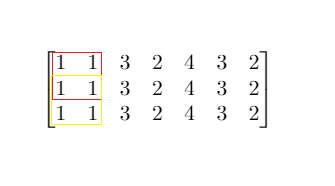

1292. 元素和小于等于阈值的正方形的最大边长
二维前缀和让任意方块和 O(1) 可查；边长对答案单调（可行则更小也可行），二分最大可行边长。
思路
P[i][j]= 从(0,0)到(i-1,j-1)的矩形和，外圈补 0 当哨兵，省掉全部边界判断。- 右下角
(i,j)、边长s的方块和 =P[i][j] − P[i-s][j] − P[i][j-s] + P[i-s][j-s]（容斥）。 - 边长
s可行 ⇒ 更小的都可行，答案有单调性：hasSquare(s)二分，mid可行就lo = mid，否则hi = mid - 1。 mid用上取整(lo+hi+1)/2：可行侧收缩方向是lo = mid，上取整才不会卡死循环。
图解
最优解
1class Solution {2 public int maxSideLength(int[][] mat, int threshold) {3 int m = mat.length, n = mat[0].length;4 // P[i][j] = 左上角 (0,0) 到 (i-1,j-1) 的矩形和，方块和可 O(1) 容斥出来5 int[][] P = new int[m + 1][n + 1];6 for (int i = 1; i <= m; i++)7 for (int j = 1; j <= n; j++)8 P[i][j] = P[i - 1][j] + P[i][j - 1] - P[i - 1][j - 1] + mat[i - 1][j - 1];9 // 二分边长：s 可行则更小的也可行，单调，可二分10 int lo = 0, hi = Math.min(m, n);11 while (lo < hi) {12 int mid = (lo + hi + 1) / 2;13 if (hasSquare(P, mid, threshold)) lo = mid;14 else hi = mid - 1;15 }16 return lo;17 }18 19 // 是否存在某个 s×s 方块的和 ≤ threshold20 private boolean hasSquare(int[][] P, int s, int threshold) {21 for (int i = s; i < P.length; i++)22 for (int j = s; j < P[0].length; j++) {23 int sum = P[i][j] - P[i - s][j] - P[i][j - s] + P[i - s][j - s];24 if (sum <= threshold) return true;25 }26 return false;27 }28}题目
给你一个大小为 m x n 的矩阵 mat 和一个整数阈值 threshold。
请你返回元素总和小于或等于阈值的正方形区域的最大边长；如果没有这样的正方形区域，则返回 0 。
示例 1：

输入：mat = [[1,1,3,2,4,3,2],[1,1,3,2,4,3,2],[1,1,3,2,4,3,2]], threshold = 4 输出：2 解释：总和小于或等于 4 的正方形的最大边长为 2，如图所示。
示例 2：
输入：mat = [[2,2,2,2,2],[2,2,2,2,2],[2,2,2,2,2],[2,2,2,2,2],[2,2,2,2,2]], threshold = 1 输出：0
提示：
m == mat.lengthn == mat[i].length1 <= m, n <= 3000 <= mat[i][j] <= 1040 <= threshold <= 105
题面取自力扣当前版本。
数据快照 2026-11-04。题面版权归力扣所有，本站点仅供本人学习使用，请勿对外发布。